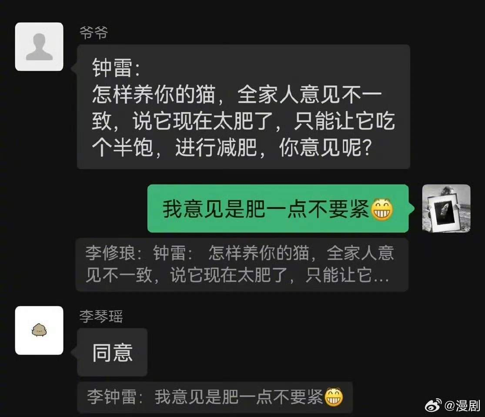
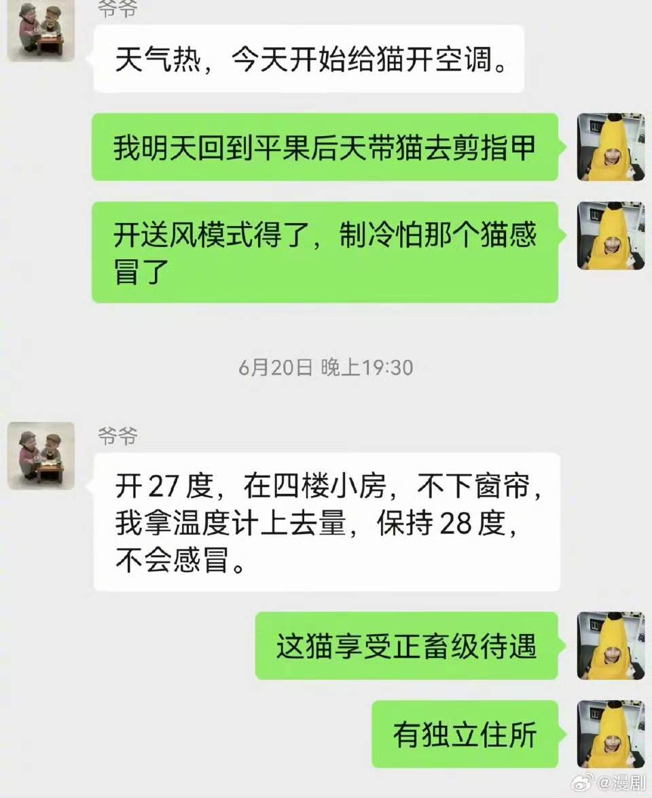
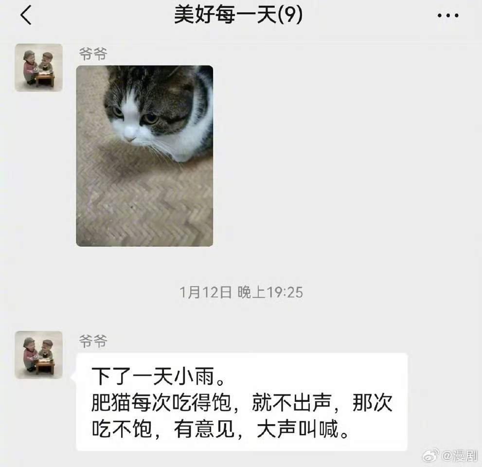

2025年2月
广播发布后不可编辑，所以每条都是那一刻的原话。
2025-02-27 20:32:30
 看过 神探夏洛克 第二季 / Sherlock Season 2 ★★★★★
看过 神探夏洛克 第二季 / Sherlock Season 2 ★★★★★
再次证明分享欲果然是最大的喜欢。（音乐蛮好听的，转场真是好炫酷。）
2025-02-26 10:28:14
 想读 夏光
想读 夏光
2025-02-25 21:30:51
在看 神探夏洛克 第二季 / Sherlock Season 2 ★★★★☆
再次证明分享欲果然是最大的喜欢。
2025-02-24 00:24:46
 在看 神探夏洛克 第一季 / Sherlock Season 1 ★★★★☆
在看 神探夏洛克 第一季 / Sherlock Season 1 ★★★★☆
第一集有那么一点点的逻辑牵强。
2025-02-23 21:37:44
想看 神探夏洛克 第二季 / Sherlock Season 2
2025-02-23 21:11:49
 想看 蜂鸟 / 벌새
想看 蜂鸟 / 벌새
2025-02-22 18:31:13
 看过 吉祥如意 ★★★★☆
看过 吉祥如意 ★★★★☆
幕后反而像狗尾续貂，试图用“伪记录”来解构传统家庭与社会发展的矛盾。大鹏一直在试图将冲突的锚点固定在真实与虚假的王庆丽身上，但他其实是最自私的那个人。摄像机具有进入偶然性，电影是非线性的叙事，其发生的故事永远是导演自以为是的剪辑。但就算这样，大鹏说的“别拍了”仍然是冲突从戏里转向银幕外的可悲转折。
2025-02-22 18:24:49
 看过 吉祥 ★★★★★
看过 吉祥 ★★★★★
由《吉祥如意》窥见《吉祥》的全貌，这里面影调灰蒙蒙的，漫天的雪花飘落，冷冰冰。东北的地域人文太适合拍成家庭片了，以至于我把我的家庭不自觉地投射到这里面，害怕“树倒猢狲散”。
2025-02-20 19:47:29
 读过 超越音符：林俊杰20周年 ★★★☆☆
读过 超越音符：林俊杰20周年 ★★★☆☆
baby的📖，他热衷的偶像就是JJ。JJ的歌很好，这本书装帧也很好，但内容真不怎么亮眼。
2025-02-20 09:37:14
 听过 念诗之王 ★★★★★
听过 念诗之王 ★★★★★
太经典的鬼畜了。
2025-02-18 00:39:04
 在读 三只忧伤的老虎 ★★★★☆
在读 三只忧伤的老虎 ★★★★☆
好奇幻的开头。
2025-02-18 00:18:17
 看过 机器人之梦 / Robot Dreams ★★★★★
看过 机器人之梦 / Robot Dreams ★★★★★
我本以为很治愈的故事最后的演绎却让我泪崩。当门铃响起的平行蒙太奇时，我尤其希望robot能够回来。花朵之舞很愉悦，突破画幅的思路很独特。dog没讲出一句话我就明白他和duck就不会在一块了。robot看着自己的身体明白了他再闯入dog的生活就是给他添乱了，他爱他，所以选择跳了最后一段disco。《September》很好听。
2025-02-17 18:23:49

2025-02-15 15:47:58
 看过 志愿军：雄兵出击 ★★★☆☆
看过 志愿军：雄兵出击 ★★★☆☆
和父亲在一个下午看的，还行，就是太空洞了。
2025-02-15 15:37:07
想看 志愿军：雄兵出击
2025-02-15 12:57:58
收藏广播到豆列 理解 la vie
2025-02-15 12:52:39
2025-02-14 16:48:33
 看过 请叫我总监 ★★☆☆☆
看过 请叫我总监 ★★☆☆☆
也是母亲先开始看的，我最近实在无聊，想着追看看。
2025-02-14 15:16:53
在看 请叫我总监 ★★☆☆☆
也是母亲先开始看的，我最近实在无聊，想着追看看。
2025-02-12 17:08:51
 看过 封神第二部：战火西岐 ★★★☆☆
看过 封神第二部：战火西岐 ★★★☆☆
人物失去了动机，只是在被剧情推着走。
2025-02-11 17:25:21
 看过 猫鼠游戏 / Catch Me If You Can ★★★★☆
看过 猫鼠游戏 / Catch Me If You Can ★★★★☆
一个赋闲下午看的电影。
2025-02-09 11:54:34
 看过 爆裂鼓手(短片) / Whiplash ★★★☆☆
看过 爆裂鼓手(短片) / Whiplash ★★★☆☆
长片里最能体现老师性格的一个片段。
2025-02-09 09:30:24
 听过 世界赠予我的 ★★★☆☆
听过 世界赠予我的 ★★★☆☆
世界赠予我过太多雷霆。
2025-02-09 09:28:08
听过 世界赠予我的 ★★★★☆
世界赠予我太多雷霆。
2025-02-08 22:24:48
关注榜单 2024年度榜单高分电影精选
2025-02-08 22:20:07
 看过 年少日记 / 年少日記 ★★★★☆
看过 年少日记 / 年少日記 ★★★★☆
从最后老师与匿名学生的沟通中可以发现导演很清楚镜头霸凌的存在，所以当郑有杰从墙角转过身来的时候我尤其心疼。
2025-02-06 20:28:13
 看过 六姊妹 ★★☆☆☆
看过 六姊妹 ★★☆☆☆
母亲在电视上看的，我跟着一起打打岔，第五集弃看了。
2025-02-05 14:11:26
 听过 万物盛开法则 ★★★★☆
听过 万物盛开法则 ★★★★☆
勉励自己好好生活。
2025-02-05 13:06:07
 想看 辉夜大小姐想让我告白：初吻不会结束 / かぐや様は告らせたい-ファーストキッスは終わらない-
想看 辉夜大小姐想让我告白：初吻不会结束 / かぐや様は告らせたい-ファーストキッスは終わらない-
2025-02-05 12:47:44
 看过 追龙 / 追龍 ★★★☆☆
看过 追龙 / 追龍 ★★★☆☆
双雄配置出色，只是结尾过于刻意。
2025-02-04 23:24:29
 听过 空中飞人 - Single ★★★★☆
听过 空中飞人 - Single ★★★★☆
我能不能写出一首你爱听的歌呢。
2025-02-04 23:24:03
 在听 空中飞人 ★★★★☆
在听 空中飞人 ★★★★☆
嗯，嗯，目前只听了一首。
2025-02-04 23:14:46
 读过 撒哈拉的故事 ★★★★☆
读过 撒哈拉的故事 ★★★★☆
借的杨青的书，今天终于是看掉了一篇《沙漠中的饭店》。
2025-02-04 23:14:18
 在读 撒哈拉的故事 ★★★★☆
在读 撒哈拉的故事 ★★★★☆
杨青借我的是这个版本，可我到现在都没读完。
2025-02-04 22:57:43
 看过 爆裂鼓手 / Whiplash ★★★★☆
看过 爆裂鼓手 / Whiplash ★★★★☆
结尾突兀停止在镲声上，呼应了开头的鼓点，整场电影就宛似一首曲子一样。但是光头太会PUA了，有一点讨厌了。情节上有很多生硬的转折，推进还是过于随意。原来从这一部开始导演就开始使用甩移镜头了。
2025-02-04 00:15:26
 看过 哪吒之魔童闹海 ★★★★☆
看过 哪吒之魔童闹海 ★★★★☆
相较于前作强烈的个人主义风格，本作更偏颇于集体力量的较量。剧情上结构合理紧凑，但后期只是由金句来推进故事，感染力稍弱。至于宣传的水的解算倒是没看出多少出彩的地方。白一旦走了黑道，黑便成了较白的一方，炼丹炉壁上充斥满了鬼脸，黑色与金色一碰撞，血色溢了出来，真有点不像春节档的感觉。
2025-02-01 10:36:43
收藏小组讨论到豆列 留恋
  


2025-02-01 00:02:54
 看过 青春猪头少年不会梦到娇怜外出妹 / 青春ブタ野郎はおでかけシスターの夢を見ない ★★★★☆
看过 青春猪头少年不会梦到娇怜外出妹 / 青春ブタ野郎はおでかけシスターの夢を見ない ★★★★☆
虽然看得过昏昏欲睡，但也是消遣。